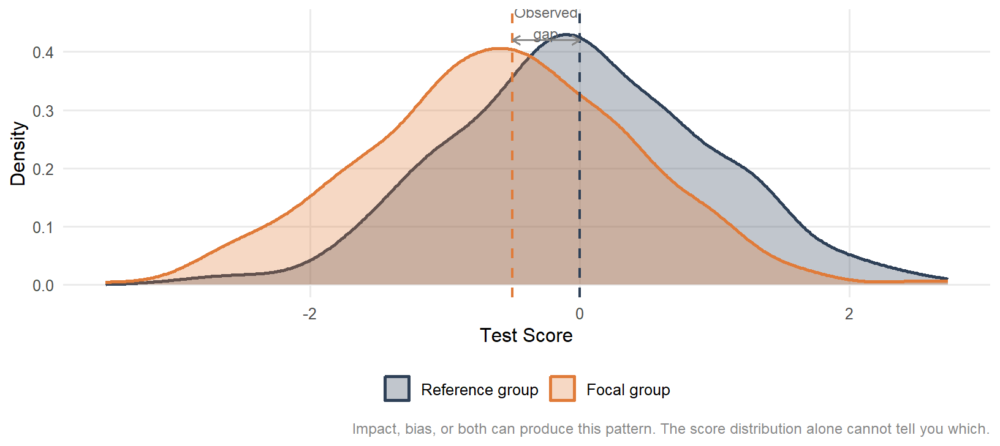

9 Do Scores Mean the Same for Everyone?
9.1 Bias, Fairness, and Measurement Equivalence
9.2 Why This Matters
A psychological test produces a number. That number is supposed to mean something: a level of ability, a degree of symptom severity, a likelihood of success. The validity framework we covered in Chapter 4 is about whether that meaning holds up under scrutiny. This chapter is about a specific and consequential question within that framework: does the number mean the same thing for everyone who takes the test?
The answer is not always yes, and the consequences of getting it wrong are not abstract.
Consider three scenarios.
A manufacturing company uses a cognitive ability test to screen applicants for a technical role. A candidate from a recent immigrant community scores below the cutoff and is not interviewed. The hiring manager assumes the score reflects ability. What if it reflects, in part, familiarity with the cultural and linguistic conventions embedded in the test items, conventions that have nothing to do with the ability to do the job?
A school psychologist administers a standardized assessment to determine whether a child qualifies for special education services. The child is a native Spanish speaker in a predominantly English-medium school. The assessment was normed on a sample that did not include children with her linguistic background. The score falls below the threshold for services. The psychologist documents the result as reflecting the child’s cognitive profile. What if the score reflects, in part, the mismatch between the test’s assumptions and the child’s experiences?
A clinical psychologist uses a depression screening instrument to determine whether a patient should be referred for further evaluation. The patient is a first-generation immigrant from Southeast Asia. The instrument was developed and validated on a North American majority-culture sample. The patient’s score falls below the referral threshold. He is not referred. His depression goes undetected and untreated for another year.
In each case, a score-based decision affected a person’s life. In each case, the decision rested on an assumption that was never verified: that the test measures the same construct, in the same way, with the same accuracy, for this person as for the people on whom the test was developed.
This chapter is about how to evaluate that assumption, what happens when it fails, and what the evidence base for a fair assessment actually requires.
9.3 What Bias Means, and What It Doesn’t
The word bias is used loosely in everyday language to mean unfairness or prejudice. In psychometrics it has a more specific meaning, and the distinction matters.
Note
Measurement bias refers to systematic, construct-irrelevant variance that differentially affects the scores of identifiable groups.
Three words carry the weight of this definition. Systematic means the effect is consistent and directional, not random. Construct-irrelevant means the variance is not part of what the test intends to measure; it is extra, unwanted signal. Differentially means the effect is not the same for all groups. Some groups are affected more than others.
Bias, under this definition, is a property of the measurement instrument and the process surrounding it. It is not a property of the test takers or of the world. A test can be biased even if the groups using it genuinely differ on the construct being measured. Bias is about the measurement process, not about the distribution of the trait.
Bias Is Not the Same as Impact
This is the most important distinction in the chapter, and students who understand it will be able to evaluate fairness claims in published research and test manuals far more critically than most practitioners.
Impact refers to observed group differences in scores that reflect genuine differences in the measured construct. If two groups differ on a measure of reading comprehension because they genuinely differ in reading comprehension, that is impact. The test is doing its job.
Bias refers to observed group differences that are at least partly attributable to construct-irrelevant factors: features of the test or the testing situation that systematically affect one group more than another, independently of their standing on the construct.
The same observed score difference can reflect impact, bias, or some combination of both. A test score gap between two groups is not, by itself, evidence of bias. Nor is the absence of a gap evidence of fairness. Determining which is present requires evidence beyond the score distribution, and that evidence is the subject of the rest of this chapter. See Figure fig-bias-impact.
A Taxonomy of Bias Sources
Bias can enter the measurement process at several points. Table tbl-bias-sources summarizes the major sources and how each is typically evaluated.
| Source | What it means | Primary detection methods |
|---|---|---|
| Sampling | The norming sample does not represent the target population | Demographic review of standardization sample |
| Construct | The construct is defined or expressed differently across groups | Multi-group CFA, measurement invariance, expert review |
| Item | Individual items function differently for different groups | DIF analysis (Mantel–Haenszel, logistic regression) |
| Test-taking | Construct-irrelevant person factors affect performance | Group comparisons, response time analysis, interviews |
| Predictive | The test predicts outcomes with different accuracy across groups | Differential prediction, separate regression by group |
These sources are not mutually exclusive. A test can show item bias and predictive bias simultaneously, or construct bias that manifests partly at the item level. A thorough fairness evaluation addresses multiple sources using multiple methods. No single analysis is sufficient, and a finding of “no bias” on one method does not rule out bias of other types.
9.4 Fairness Is Not a Statistic
Bias is a technical concept with detection methods. Fairness is something broader.
Note
Fairness is a judgment about whether score-based interpretations and uses are appropriate for specific groups in specific contexts. It is not a fixed property of the test.
This framing comes from the pragmatic tradition in measurement science, which holds that measurement claims cannot be evaluated in the abstract. A test is not fair or unfair in isolation. It is fair or unfair for a purpose, with a particular group, given specific consequences.
The same reading comprehension test might be:
- Fair for native English speakers in an academic selection context where reading comprehension is the construct of interest
- Unfair for recent immigrants in a high-stakes employment context where the job does not require the kind of reading comprehension the test measures
- An open question for English language learners in an educational placement context, pending evidence about whether the test’s linguistic demands are construct-relevant or construct-irrelevant for that use
What changes across these scenarios is not the test. It is the use, the population, and the consequences of the decision.
This has a direct implication for how fairness claims in test manuals and published validity studies should be evaluated. A statement like “DIF analyses revealed no biased items” is not a fairness conclusion. It is one piece of evidence (item-level evidence) within a broader argument that still needs to be made. The argument must connect the evidence to the specific intended use, the specific population, and the specific consequences of score-based decisions. Within Kane’s (1992) interpretation–use argument, fairness claims function as warrants. If the warrants are not supported, the validity argument fails for that use and that group, even if it holds for others.
Fairness review is also not a one-time event. As test uses expand to new populations or new contexts, the evidence base must be revisited.
9.5 Differential Item Functioning
The most widely used statistical approach to detecting item-level bias is differential item functioning (DIF) analysis. DIF analysis asks whether individual items on a test behave differently across groups after accounting for overall ability or trait level.
What DIF Is
Note
An item shows differential item functioning when examinees from different groups who have the same standing on the construct being measured do not have the same probability of answering the item correctly (or endorsing it, for Likert-type items).
The key phrase is same standing on the construct. DIF analysis is a conditional comparison: it asks about group differences in item performance within ability levels, not across them. Without that conditioning, you are measuring raw group differences in item performance, which may simply reflect real differences in ability (impact) rather than item malfunction.
This conditionality is what distinguishes DIF from simple item difficulty comparisons. An item that is hard for everyone is not a biased item. An item that is harder for one group even among examinees who are equally able overall is a candidate for DIF.
The Reference/Focal Group Structure
DIF analyses are always comparative. You need two groups: a reference group (typically the majority group or the group for whom the test was originally developed) and a focal group (the group whose item performance is being evaluated relative to the reference group).
The choice of reference group is substantive, not statistical. It reflects a judgment about what the comparison is for. When multiple focal groups are of interest (e.g., by sex, race/ethnicity, and language background), each comparison is run separately against the same reference group. Results are not combined.
One point worth stating explicitly: DIF in either direction is a concern. An item that statistically advantages the focal group is not automatically acceptable. It may still contain construct-irrelevant content that happens to benefit that group, and it warrants the same expert review as an item that disadvantages them.
DIF Is Neither Necessary Nor Sufficient for Bias
This is a conceptual point that is frequently misunderstood, including in published research.
DIF can exist without bias. If an item functions differently across groups because the groups genuinely differ on a secondary dimension that is legitimately part of the construct, the DIF reflects real performance differences, not measurement malfunction. Consider a reading comprehension test that includes a passage about a scientific concept. If students with more science background perform better on items related to that passage, even after matching on overall reading level, the DIF may reflect real differences in background knowledge that are arguably part of what reading comprehension requires. Whether this is bias or impact depends on the construct definition.
A simpler example comes from a physical measurement. A bathroom scale measures weight. Men weigh more than women on average, so the raw scores differ by sex. That difference is impact, not bias. When you compare men and women who have the same actual weight, the scale gives them the same reading. There is no differential functioning once you condition on the construct.
This works cleanly only because the construct—weight—is clearly defined and biologically grounded. For psychological constructs, where group differences may reflect cultural expression or measurement artifacts, the same logic may hold, but does not automatically, apply.
Bias can exist without DIF. Bias can operate at the test level without any individual item flagging. Predictive bias (the systematic over- or under-prediction of outcomes for a group) can exist even when every item functions identically across groups. Construct bias, where the construct itself is defined or experienced differently across cultures, may not produce item-level DIF at all, because no single item is responsible for the discrepancy. The whole instrument is misaligned.
Important
DIF is a highly informative symptom but not a diagnosis. A flagged item is a signal that something warrants investigation, not evidence that bias has been confirmed. A clean DIF analysis is not evidence that no bias exists.
Uniform vs. Non-Uniform DIF
DIF comes in two forms, distinguished by whether the group difference in item performance is consistent across ability levels or varies by ability level.
Uniform DIF occurs when one group consistently outperforms the other across the entire ability range. The item is uniformly easier for one group at every ability level. Graphically, the item characteristic curves for the two groups are parallel but offset.
Non-uniform DIF occurs when the pattern of group differences changes across ability levels. At low ability, one group may outperform the other; at high ability, the pattern may reverse. The item characteristic curves cross. This pattern is more complex to interpret and has different implications for the choice of detection method.
Examples of uniform and non-uniform DIF are available in Figure fig-uniform-nonuniform.

9.6 Classical DIF Methods
Two classical (non-IRT) methods dominate applied DIF analysis: the Mantel–Haenszel procedure and logistic regression. Both condition on total test score as a proxy for ability. Both are available in R through the difR package (Magis et al., 2010).
The Mantel–Haenszel Procedure
The Mantel–Haenszel (MH) procedure (Holland & Thayer, 1986) was developed at Educational Testing Service and became the dominant method for large-scale DIF detection . Its prevalence in applied testing reflects historical adoption and practical interpretability more than statistical superiority, a point we return to below.
Logic. MH stratifies examinees by their total test score. Within each score stratum, it constructs a 2×2 table: group membership (reference vs. focal) × item response (correct vs. incorrect). It then combine{s these stratum-specific tables into a summary statistic that tests whether the odds of correct response differ by group after conditioning on ability.
Within a single stratum, the comparison looks like Table tbl-mh-stratum:
| Group | Correct | Incorrect | P(correct) |
|---|---|---|---|
| Reference | 28 | 12 | .70 |
| Focal | 16 | 14 | .53 |
If the focal group consistently shows lower correct-response rates across strata (after conditioning on total score), MH will detect it.
Key output.
| Item | MH χ² | p | MH Δ | ETS Class | Flag |
|---|---|---|---|---|---|
| Item 1 | 2.04 | 0.154 | -0.91 | A | |
| Item 2 | 0.03 | 0.861 | 0.16 | A | |
| Item 3 | 5.51 | 0.019 | -1.34 | B | ! Moderate |
| Item 4 | 1.13 | 0.288 | 0.68 | A | |
| Item 5 | 0.18 | 0.675 | -0.30 | A | |
| Item 6 | 0.02 | 0.886 | 0.14 | A | |
| Item 7 | 3.15 | 0.076 | -1.12 | A | |
| Item 8 | 0.21 | 0.646 | -0.29 | A | |
| Item 9 | 0.01 | 0.941 | 0.10 | A | |
| Item 10 | 15.31 | 0.000 | 2.29 | C | !! Large |
| Item 11 | 0.00 | 0.991 | 0.07 | A | |
| Item 12 | 0.84 | 0.358 | -0.53 | A | |
| Item 13 | 0.69 | 0.406 | 0.52 | A | |
| Item 14 | 0.13 | 0.719 | 0.28 | A | |
| Item 15 | 0.14 | 0.711 | 0.27 | A |
Three statistics matter in Table tbl-mh-results:
- MH χ² tests whether item performance differs by group after conditioning on total score. A significant result indicates DIF is present.
- MH Δ (delta) is the effect size. A negative delta means the item is easier for the focal group; a positive delta means it is easier for the reference group. The magnitude determines the ETS classification regardless of direction.
- ETS classification (A, B, or C) provides a practical severity rating. Class A indicates negligible DIF with no action required. Class B indicates moderate DIF warranting expert review. Class C indicates large DIF; the item should not be retained without substantive review.
The thresholds are: |Δ| must be ≥ 1.0 and the result must be statistically significant to leave Class A. |Δ| ≥ 1.5 and statistical significance places an item in Class C.
What MH cannot do. MH detects uniform DIF only. It cannot detect non-uniform DIF, meaning patterns where the group difference changes across ability levels. It also assumes the total score is a clean proxy for ability, which becomes problematic if biased items are included in the total score (the purification problem, discussed below).
Running the Mantel–Haenszel Procedure in R
The difMH() function in the difR package runs the full MH procedure. The three required inputs are the item response matrix, a group vector, and a matching variable (typically the total score).
Code
library(difR)
# Item responses only (no id or group column)
items <- dat[, paste0("item", 1:15)]
# Group vector (0 = reference, 1 = focal)
group <- dat$group
# Total score as matching variable
total <- rowSums(items)
# Run MH DIF analysis
mh_result <- difMH(
Data = items,
group = group,
focal.name = 1,
match = total,
correct = TRUE, # Yates continuity correction
alpha = 0.05
)
# View results
print(mh_result)The focal.name = 1 argument tells difMH which value in the group vector identifies the focal group. The correct = TRUE argument applies a continuity correction to the chi-square statistic, which is recommended for small cell sizes. Setting purify = TRUE would run the iterative purification procedure described above; the default is FALSE.
Output includes the MH chi-square, p-value, and alpha (the odds ratio) for each item. The delta and ETS classification are derived from the alpha as shown in the results table above. If you need to inspect the raw slot names in your version of difR, run names(mh_result) after fitting the model.
Logistic Regression DIF
Logistic regression DIF (Swaminathan & Rogers, 1990) extends MH by modeling the probability of correct response as a function of total score, group membership, and their interaction. It is statistically more capable than MH and is the recommended method when software is available.
Three nested models are estimated for each item and provided in Table tbl-lr-models:
| Model | Predictors | What it tests |
|---|---|---|
| Model 1 | Total score | Baseline — ability predicts item response |
| Model 2 | Total score + group | Uniform DIF — group predicts response after controlling for ability |
| Model 3 | Total score + group + group × score | Non-uniform DIF — group effect varies by ability level |
Uniform DIF is indicated by a significant improvement from Model 1 to Model 2 (significant group term). Non-uniform DIF is indicated by a significant improvement from Model 2 to Model 3 (significant interaction term). Effect size is evaluated using R² change alongside the significance tests. A statistically significant finding with a very small R² change may not be practically meaningful, especially in large samples. Example results are provided in Table tbl-lr-results.
| Item | Group term p | Interaction p | R² change | DIF type |
|---|---|---|---|---|
| Item 3 | .009 | .44 | .018 | Uniform |
| Item 5 | <.001 | .38 | .041 | Uniform |
| Item 7 | .03 | .41 | .015 | Uniform |
| Item 9 | .004 | .02 | .031 | Non-uniform |
| Item 10 | .13 | .61 | .009 | — |
| Item 13 | .02 | .55 | .012 | Uniform |
The results for Item 9 are instructive. MH classified it as Class C with Δ = −1.6, suggesting large uniform DIF favoring the focal group. The logistic regression interaction term is significant (p = .02), revealing that the pattern is actually non-uniform: the group difference in item performance changes across ability levels. MH averaged over this crossing pattern and reported it as a consistent direction of DIF, which is misleading. Logistic regression reveals the more complex picture.
Why MH is still widely used. If logistic regression is more capable, why does MH dominate applied testing? The answer is historical and practical, not statistical. MH was developed at ETS decades before logistic regression DIF became standard, and its delta metric and A/B/C classification system became embedded in testing practice. Most published test manuals report MH results. The multiplicity concern (that running many significance tests inflates Type I error) applies equally to both methods, so it is not a reason to prefer MH. When logistic regression is available, it should be used. When reading applied reports, MH results need to be understood and evaluated critically.
Running Logistic Regression DIF in R
The difLogistic() function in difR runs the full logistic regression DIF procedure. The setup is identical to difMH(): item response matrix, group vector, and matching variable.
Code
# Run logistic regression DIF
lr_result <- difLogistic(
Data = items,
group = group,
focal.name = 1,
match = total,
type = "both", # test for both uniform and non-uniform DIF
criterion = "LRT", # likelihood ratio test
alpha = 0.05
)
# View results
print(lr_result)The type = "both" argument tests for both uniform and non-uniform DIF simultaneously. Setting type = "udif" tests uniform DIF only (equivalent in scope to MH); type = "nudif" tests non-uniform DIF only. In most applied situations "both" is the right choice.
The criterion = "LRT" argument uses the likelihood ratio test to compare nested models. The alternative is "Wald", which uses Wald chi-square tests. LRT is generally preferred.
As with difMH(), setting purify = TRUE runs the iterative purification procedure. Output includes the likelihood ratio statistic, degrees of freedom, p-value, and R² change for each item. Items flagged by difLogistic() but not by difMH() are candidates for non-uniform DIF — the interaction term is doing work that MH cannot do.
The Purification Problem
Both MH and logistic regression use the total test score as the matching variable, the proxy for ability that conditioning is done on. This creates a circularity: if some items are biased against the focal group, those students earn lower total scores, which means they get matched against lower-ability reference group members in the strata. True DIF on some items may be masked; spurious DIF may appear on others.
The standard solution is purification: an iterative procedure in which flagged items are removed from the matching variable and the analysis is re-run on the remaining items. This continues until the set of flagged items stabilizes. Purification is implemented in difR via the purify = TRUE argument.
In practice, purification is conceptually important but practically modest in most well-constructed tests. It is nonetheless worth conducting as a sensitivity check, particularly when a large proportion of items are flagged.
From Statistical Flag to Substantive Judgment
A DIF flag is not a bias determination. It is an invitation to investigate. The statistical result tells you that an item is behaving differently after conditioning on ability; it does not tell you why.
An item can be flagged because:
- It contains construct-irrelevant content that systematically disadvantages the focal group. This is bias, and the item should be revised or removed.
- It taps a secondary dimension on which the groups legitimately differ. This is impact, and the item may be retained depending on the construct definition.
- It uses vocabulary or cultural context that is more familiar to the reference group. This may be bias, and requires expert evaluation of whether that familiarity is construct-relevant.
- The matching variable is contaminated by other biased items. This is a methodological artifact that purification can address.
Resolving the ambiguity requires substantive expert review: people with knowledge of the construct, the groups involved, and the cultural and linguistic context of the items. The statistics open the conversation. Expert judgment closes it.
Item 7. “Which word best completes the sentence: ‘The scientist’s findings were met with widespread _____ from the academic community.’” Suppose this item flags as Class C uniform DIF favoring the reference group (majority English speakers). Does that mean it is biased?
Not necessarily. ELL students may perform worse on this item because academic vocabulary legitimately differs between groups, and if vocabulary knowledge is part of what this reading comprehension test is intended to measure, then the DIF reflects impact, not bias. The item is functioning as designed.
But if the same item appears on a test of scientific reasoning, where vocabulary breadth is not part of the construct, then the linguistic demand is construct‑irrelevant. In that context, the DIF would indicate bias. The statistics cannot distinguish these explanations. Only substantive review—by a reading specialist and an ELL education expert—can determine whether the vocabulary demand aligns with the construct the test claims to measure.
9.7 Measurement Invariance
DIF analysis operates at the item level. Measurement invariance operates at the factor level. Both address the same fundamental question: do scores mean the same thing across groups? They differ only in the level of the measurement model at which they operate.
A Brief Recap
As covered in Chapters 7 and 8, confirmatory factor analysis (CFA) models the relationship between observed items and one or more latent factors. Measurement invariance testing uses multi-group CFA to evaluate whether that model holds up across groups.
Three levels of invariance are typically assessed:
Configural invariance means the same factor structure (which items load on which factors) holds across groups. This is the weakest form and is a precondition for the others.
Metric invariance (weak invariance) means factor loadings are equal across groups. Equal loadings mean that the relationship between the latent factor and the observed items is the same for both groups; the items are measuring the construct with the same sensitivity.
Scalar invariance (strong invariance) means factor loadings and item intercepts are equal across groups. Equal intercepts mean that at the same level of the latent factor, the expected item scores are the same for both groups. This is required for meaningful comparison of latent means across groups.
When scalar invariance holds, group mean differences in observed scores can be interpreted as group mean differences in the latent construct. The scores are measuring the same thing in the same way, with the same scale origin. When it fails, observed score differences are contaminated by differences in item intercepts, and latent mean comparisons cannot be made without qualification.
Invariance and DIF Are Two Levels of the Same Question
The conceptual link between DIF and measurement invariance is direct. DIF at the item level and non-invariance at the factor level are manifestations of the same underlying problem: the measurement model does not hold equally across groups.
Non-invariant intercepts at the CFA level correspond to uniform DIF at the item level. Items with different intercepts across groups are items that are systematically easier or harder for one group after accounting for the latent factor, which is exactly what MH and logistic regression detect. Non-invariant loadings correspond to a form of non-uniform DIF in which the sensitivity of the item to the construct differs by group.
When both DIF and invariance analyses are available, they should be interpreted together. A finding of metric but not scalar invariance, combined with several Class C DIF items, tells a consistent story about where the measurement model breaks down.
Partial Invariance
Full scalar invariance is frequently not achieved in practice, particularly across groups with substantial cultural or linguistic differences. Partial invariance, where some but not all items show invariant intercepts, permits limited comparisons if the non-invariant items are identified and handled appropriately.
With partial invariance, latent mean comparisons are possible if at least two items per factor show invariant intercepts (to anchor the scale). The non-invariant items are freed across groups in the model, and their contribution to the comparison is explicitly accounted for. This is a more defensible position than either assuming full invariance when it does not hold or abandoning cross-group comparisons entirely.
The practical implication: a finding of partial scalar invariance should prompt the same substantive review process as a DIF flag. Which items are non-invariant? What do they have in common? Is there a substantive explanation (cultural specificity, linguistic complexity, content familiarity) that suggests construct-irrelevant variance?
Running an Invariance Test in R
Measurement invariance testing uses the lavaan package, which was introduced in Chapters 7 and 8. The abbreviated workflow is:
A significant chi-square difference test between the metric and scalar models indicates that at least one intercept is non-invariant. Modification indices identify which items are responsible. The lavTestScore() function provides item-level detail on where the model is misspecified.
Fit index changes alongside chi-square tests provide additional guidance: a ΔCFI of less than −0.010 and ΔRMSEA of less than 0.015 suggest acceptable invariance even when the chi-square difference is significant, particularly in large samples where the test is sensitive to trivial misfit (Cheung & Rensvold, 1999).
9.8 Predictive Bias
Item-level DIF and measurement invariance address whether the test measures the construct equivalently across groups. Predictive bias addresses a different question: whether the test predicts outcomes with equal accuracy across groups.
Note
Predictive bias occurs when a test systematically over- or under-predicts a criterion outcome for members of one group, relative to what would be predicted on the basis of ability alone.
The distinction is important. A test can show no item-level DIF, full measurement invariance, and still show predictive bias. These analyses address different aspects of measurement and use. A complete fairness argument requires attention to all of them.
Detecting Predictive Bias
Predictive bias is evaluated by fitting separate regression lines predicting the criterion (e.g., GPA, job performance, diagnosis) from test scores for each group. Three patterns are possible:
No predictive bias: slopes and intercepts are equal. The test predicts the criterion equally well for both groups, with no systematic over- or under-prediction.
Slope differences: the test is more predictive for one group than the other. The regression lines converge or diverge across the score range. This is non-uniform predictive bias, where the prediction error varies depending on where in the score distribution an examinee falls.
Intercept differences with equal slopes: the most common pattern. The test predicts with equal accuracy for both groups (similar slopes and correlations), but systematically over- or under-predicts for one group at every score level.

In Figure fig-pred-bias, group B students earn lower average test scores—about 54.9 in this simulation, compared with 61.2 for Group A. Yet at any given score, Group B students typically achieve higher GPAs than Group A students with the same score. The separation between the two regression lines illustrates this pattern clearly.
Because the admissions office relies on a single prediction equation for all applicants, a Group B student with a score of 55 receives a predicted GPA that is too low. In reality, students from Group B who score 55 tend to perform better than the model suggests.
The consequence is straightforward: Group B applicants near the cutoff are rejected based on a prediction that undervalues their likely performance. They would have succeeded, but the model prevents them from demonstrating it.
The issue is not that the test items themselves are biased or that the test is inherently harder for Group B. The problem is that the prediction model misrepresents what a given score means for Group B applicants. Decisions are made using a prediction that is systematically inaccurate in a way that disproportionately harms one group.
A similar dynamic can occur in special education. If a cognitive assessment consistently underestimates the academic potential of children from certain cultural or linguistic backgrounds, eligibility decisions based on that assessment will exclude students who need services and include others who do not. The error is not random; it is directional and specific to particular groups.
A Closer Look: Simulating Predictive Bias
The scatter plot above shows the intercept difference pattern statically. The two interactive figures below let you engage with the data directly.
Figure fig-pred-bias-interactive1 shows the prediction error for each student. When an admissions office applies a single combined regression equation to both groups, Group B students are systematically underpredicted. Hover over any point to see the actual GPA, the predicted GPA from the combined model, and the prediction error.
Notice that Group B students with higher test scores tend to have positive prediction errors — their actual GPA exceeds what the combined model predicts. The combined model treats all students as if they follow Group A’s regression line. Since Group B’s true intercept is higher, the combined model systematically undersells their expected performance.
The intercept difference has a direct and concrete interpretation. The two regression equations share nearly identical slopes, meaning the test is equally predictive for both groups in terms of how GPA changes per unit of score. What differs is the baseline prediction. At any given test score, a Group B applicant actually tends to earn 0.38 GPA points more than a Group A applicant with the identical score but the combined model does not account for this, predicting them as if they followed Group A’s lower regression line. See Table tbl-pred-gpa to see how this would pan out in this simulated data.
| Test Score | Group A actual/predicted GPA | Group B actual GPA | Gap (B higher by) |
|---|---|---|---|
| 50 | 2.60 | 2.98 | 0.38 |
| 55 | 2.74 | 3.12 | 0.38 |
| 58 | 2.82 | 3.20 | 0.38 |
| 60 | 2.88 | 3.26 | 0.38 |
| 65 | 3.02 | 3.40 | 0.38 |
At any given test score in Table tbl-pred-gpa, Group B applicants actually tend to earn 0.38 GPA points more than Group A applicants with the same score — but the combined model, anchored to Group A’s intercept, does not capture this. Figure 4 traces what this means for admission decisions when a cutoff is applied.
Figure fig-pred-bias-slider shows the decision consequences at a fixed admissions cutoff (dashed vertical line, score = 58). Use the slider to increase the intercept gap between the two groups. An incorrectly rejected applicant (X mark) scored below the cutoff but would have achieved a GPA at or above 2.5 if admitted. Watch what happens to Group B’s X marks as the gap grows.
The X marks identify students rejected by the cutoff whose actual GPA meets the success threshold — a false negative produced by the cutoff. At gap = 0, the test predicts equally well for both groups, so false negatives arise from the position of the cutoff relative to each group’s score distribution, not from prediction error. As the gap increases, Group B accumulates more X marks while Group A’s count stays roughly stable. That shift is the signature of predictive bias: the same test score carries different predictive meaning depending on which group’s regression line applies, and the cutoff does not account for it.
At gap = 0.38 (the scenario shown in Figure 2 and 3) a meaningful number of Group B applicants who would have achieved the success threshold are rejected because the combined model systematically underestimates their expected performance at that score. The cutoff acts on the score, but the score’s meaning is distorted by the biased prediction model.
This kind of analysis - relating a cutoff to classification errors across groups — is taken up more formally in the chapter on diagnostic accuracy.
9.9 Accumulating a Fairness Argument
No single analysis constitutes a fairness conclusion. A well-supported fairness argument draws on multiple sources of evidence, each addressing a different aspect of the question. See Table tbl-fairness-evidence
| Evidence | What it addresses | Method |
|---|---|---|
| Item-level DIF | Individual items functioning differently across groups | MH, logistic regression DIF |
| Measurement invariance | Construct equivalence at the factor level | Multi-group CFA |
| Predictive validity | Equal accuracy and absence of systematic bias in prediction | Differential prediction, separate regression by group |
| Norm sample adequacy | Norm sample representing the target population | Demographic review |
| Qualitative review | Sources of bias not detectable by statistics | Cognitive interviews, expert panels, focus groups |
When evaluating a test manual or published validity study, the relevant questions are:
- Were DIF analyses conducted? Which method? Were results reported transparently, with full output rather than just a summary statement?
- Were flagged items reviewed substantively, or simply removed? Was the rationale documented?
- Was measurement invariance tested? At what levels? Was partial invariance acknowledged and addressed?
- Was predictive validity examined by group? Were slope and intercept differences tested?
- Was the norming sample appropriate for the population with whom the test is being used?
- Did the authors distinguish between statistical DIF and substantive bias? Between impact and bias?
- Were fairness claims commensurate with the evidence presented?
A statement like “no items were flagged for DIF” does not answer most of these questions. It answers one of them.
9.10 A Note on IRT-Based DIF
The methods covered in this chapter (MH and logistic regression) are classical DIF methods. They use the total test score as a proxy for the underlying ability or trait. This proxy is imperfect: the total score is computed from all items, including any that may be biased, which can contaminate the matching variable and attenuate DIF estimates.
Item Response Theory (IRT) offers a more principled approach. IRT models the relationship between examinees’ latent trait levels and their item responses directly, producing ability estimates that can be based on non-flagged items only. IRT-based DIF methods condition on these estimated ability parameters rather than on the total score, removing much of the circularity that plagues classical approaches.
The conceptual question is identical: do examinees from different groups who have the same latent trait level respond differently to this item? What changes is the precision and cleanliness of the ability estimate used to answer it.
IRT-based DIF is not covered in this chapter because it requires a foundation in IRT that has not yet been established. Chapter 13 introduces IRT as a measurement framework and revisits DIF from an IRT perspective, including a discussion of when IRT-based methods are worth the additional complexity and when classical methods are adequate.
9.11 Summary
This chapter has addressed the question of whether scores mean the same thing across groups: at the item level, at the factor level, and at the level of score use.
The key points:
- Bias is systematic, construct-irrelevant variance that differentially affects scores across groups. It is a property of the measurement instrument, not of the test takers.
- Impact refers to group differences that reflect genuine differences on the construct. The same observed score gap can reflect bias, impact, or both. Statistics cannot distinguish them without substantive judgment.
- Fairness is a judgment about whether score-based interpretations and uses are appropriate for specific groups in specific contexts. It is not a property of the test and cannot be established by any single analysis.
- DIF analysis detects item-level differential functioning after conditioning on ability. MH detects uniform DIF; logistic regression detects both uniform and non-uniform DIF. A DIF flag opens an investigation; expert review closes it.
- DIF is neither necessary nor sufficient for bias. DIF can exist without bias (impact); bias can exist without DIF (predictive bias, construct bias).
- Measurement invariance tests whether the factor model holds equivalently across groups. Non-invariant intercepts correspond to item-level DIF; both reflect the same underlying problem at different levels of analysis.
- Predictive bias addresses whether scores forecast outcomes with equal accuracy across groups. A test can show no item-level DIF and still show predictive bias.
- A complete fairness argument draws on all of these sources of evidence, connects them to the specific intended use and population, and is explicit about what the evidence does and does not establish.
9.12 Further Reading
The sources below are organized for readers who want to go deeper on the methods and applications covered in this chapter.
Methodological and pedagogical references
Berrío, Á. I., Gómez-Benito, J., & Arias-Patiño, E. M. (2020). Developments and trends in research on methods of detecting differential item functioning. Educational Research Review, 31, 100340. https://doi.org/10.1016/j.edurev.2020.100340
Berry, C. M. (2015). Differential validity and differential prediction of cognitive ability tests: Understanding test bias in the employment context. Annual Review of Organizational Psychology and Organizational Behavior, 2(1), 435–463. https://doi.org/10.1146/annurev-orgpsych-032414-111256
Martinková, P., Drabinová, A., Liaw, Y.-L., Sanders, E. A., McFarland, J. L., & Price, R. M. (2017). Checking equity: Why differential item functioning analysis should be a routine part of developing conceptual assessments. CBE—Life Sciences Education, 16(2), rm2. https://doi.org/10.1187/cbe.16-10-0307
Woo, S. E., LeBreton, J. M., Keith, M. G., & Tay, L. (2023). Bias, fairness, and validity in graduate-school admissions: A psychometric perspective. Perspectives on Psychological Science, 18(1), 3–31. https://doi.org/10.1177/17456916211055374
Applied examples
Aguinis, H., Culpepper, S. A., & Pierce, C. A. (2016). Differential prediction generalization in college admissions testing. Journal of Educational Psychology, 108(7), 1045–1059. https://doi.org/10.1037/edu0000104
Baker, C. A., Baum, L. J., Francis, J. P., Shura, R. D., & Ord, A. S. (2023). Assessment of test bias on the MMPI-2-RF higher order and restructured clinical scales as a function of gender and race. Professional Psychology: Research and Practice, 54(4), 314–325. https://doi.org/10.1037/pro0000517
Patel, J. S., Oh, Y., Rand, K. L., Wu, W., Cyders, M. A., Kroenke, K., & Stewart, J. C. (2019). Measurement invariance of the Patient Health Questionnaire-9 (PHQ-9) depression screener in U.S. adults across sex, race/ethnicity, and education level: NHANES 2005–2016. Depression and Anxiety, 36(9), 813–823. https://doi.org/10.1002/da.22940
Cheung, G. W., & Rensvold, R. B. (1999). Testing Factorial Invariance across Groups: A Reconceptualization and Proposed New Method. Journal of Management, 25(1), 1–27. https://doi.org/10.1177/014920639902500101
Holland, P. W., & Thayer, D. T. (1986). Differential item performance and the Mantel-Haenszel procedure. In H. Wainer & H. I. Braun (Eds.), Test validity (1st ed., pp. 129–145). Lawrence Erlbaum Associates.
Kane, M. T. (1992). An argument-based approach to validity. Psychological Bulletin, 112(3), 527–535. https://doi.org/10.1037/0033-2909.112.3.527
Magis, D., Béland, S., Tuerlinckx, F., & De Boeck, P. (2010). A general framework and an R package for the detection of dichotomous differential item functioning. Behavior Research Methods, 42(3), 847–862. https://doi.org/10.3758/BRM.42.3.847
Swaminathan, H., & Rogers, H. J. (1990). Detecting Differential Item Functioning Using Logistic Regression Procedures. J Educational Measurement, 27(4), 361–370. https://doi.org/10.1111/j.1745-3984.1990.tb00754.x